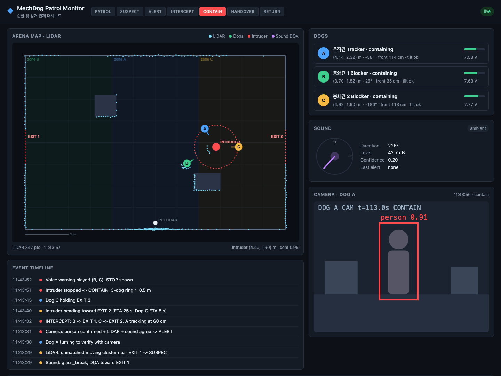

LiDAR를 등에 얹은 정찰견이 앞장서고 확인견 2마리가 줄지어 따라가며 공간 지도를 만듭니다. 침입자를 발견하면 정찰견이 멈춰 관제탑이 되고 확인견들이 포위합니다. 인계가 끝나면 다시 줄을 서서 멈췄던 곳부터 탐사를 이어 갑니다. 이 가이드는 시나리오, 만드는 방법, 그리고 로봇이 감지하는 모든 것을 보여주는 웹 대시보드를 함께 안내합니다.
하드웨어: MechDog 3마리(각각 ESP32 카메라 + 초음파) · Raspberry Pi 1대 · 2D LiDAR 1대 · ArUco 마커 종이 2장
patrol_apprehension_plan.md)의 비접촉 원칙, 교차 확인, 포위 계산, 상태 머신 구조는 그대로 이어서 씁니다.| 시간 | 장면 | 보여줄 포인트 |
|---|---|---|
| 0:00 | A → B → C가 일렬로 대기 (STANDBY). 대시보드 준비 표가 모두 초록이 되면 운영자가 "탐사 시작"을 누름 | 준비 확인, 관제 명령 |
| 0:10 | A → B → C 행렬로 출발, 대시보드에 지도가 점점 그려짐 | SLAM 매핑, 협동 이동 |
| 1:00 | A의 LiDAR에 지도에 없는 덩어리 → A 정지, 재스캔 (SUSPECT) | 변화 탐지 |
| 1:15 | A가 돌아서 카메라로 사람/마커 확인 (CONFIRM) | 다중 센서 교차 확인 |
| 1:30 | A는 관제탑, B·C가 대열을 벗어나 포위 (CONTAIN) | 역할 전환, 포위 계산 |
| 2:30 | 3방향 증거 사진 + 위치 + 타임라인을 관제에 인계 (HANDOVER) | 서비스 완결성 |
| 3:00 | B·C가 A 뒤로 돌아와 마커를 다시 잡음 (REGROUP) | 복귀 |
| 3:40 | 멈췄던 곳부터 탐사 재개, 지도 완성 | 순환 구조 |
개는 몸통 역할만 하고, 무거운 계산(SLAM, 마커 인식, 침입자 탐지, 상태 머신)은 한쪽에 고정해 둔 Raspberry Pi 관제탑이 합니다. 모니터 서버도 Pi에서 Docker 컨테이너로 실행하고, 노트북은 대시보드를 보는 화면 역할만 합니다. 시연 때는 Cloudflare Tunnel로 공개 주소(HTTPS)를 붙여 관람객도 휴대폰으로 대시보드를 볼 수 있고, 별도 기록 컨테이너가 주요 기록을 Supabase에 남깁니다(8절).
| Pi 모델 | 할 수 있는 일 |
|---|---|
| Pi 5 / Pi 4 (4 GB 이상) | SLAM, 카메라 3대 ArUco 인식, 침입자 탐지, 상태 머신, 모니터 서버까지 모두 가능 |
| Pi 4 (2 GB) / Pi 3 | BreezySLAM + ArUco(320×240)는 가능. YOLO 사람 인식은 무거우니 침입자에 마커나 색 조끼를 쓰거나 노트북으로 넘기기 |
각 확인견은 카메라로 바로 앞 개의 등에 붙은 ArUco 마커를 보고, 초음파로 그 개와의 거리를 재며 따라갑니다. A는 SLAM 지도 위에서 아직 안 가 본 곳(frontier)을 향해 천천히 이동합니다.
| 알아야 할 것 | 센서 | 이유 |
|---|---|---|
| 앞 개와의 거리 | 초음파 | 바로 앞을 재는 센서라 정확하고 빠름 |
| 앞 개가 좌우 어디 있는지 | 카메라 + ArUco | 마커가 화면 가운데에서 벗어난 정도가 곧 회전값 |
| 누구를 따라가는지 | 마커 ID | B는 마커 1만, C는 마커 2만 따라감 |
# Pi 관제탑: B와 C에 같은 코드, 따라갈 마커 ID만 다름
LEADER = {"B": ("A", 1), "C": ("B", 2)} # 따라가는 개: (앞 개, 앞 개 마커 ID)
def follow_step(dog):
leader, marker_id = LEADER[dog]
m = find_aruco(latest_frame[dog], marker_id) # 카메라 영상은 모니터 서버가 받은 것을 같이 씀
d = ultrasonic_m[dog]
if m is None: # 마커를 놓침
send(dog, {"cmd": "move", "v": 0, "turn": search_dir[dog]}) # 마지막 본 방향으로 회전
hold(leader) # 앞 개는 기다리게
return
release(leader)
turn = -K_TURN * m.dx
v = 0 if d < 0.40 else K_V * (d - 0.60)
send(dog, {"cmd": "move", "v": clamp(v), "turn": clamp(turn)})마커를 보면 앞 개와의 상대 위치를 알 수 있습니다(OpenCV solvePnP, 카메라 보정 필요). A의 지도 좌표는 SLAM으로 알고 있으니, A 좌표 + 상대 위치 = B 좌표, 같은 방법으로 C 좌표도 구합니다. 이 좌표는 대시보드 표시, 지도 오염 방지, 침입자 탐지에 모두 쓰입니다.
침입자 후보는 원래 계획서의 규칙을 그대로 씁니다. "지도에 없고, 알고 있는 개(B·C)와도 매칭되지 않는 덩어리 = 침입자 후보". A가 걷는 중에는 흔들림 때문에 오탐이 생기기 쉬우니, 후보가 보이면 A가 멈추고 2–3번 다시 스캔해서 확인합니다.
# 아이디어 (Raspberry Pi 관제탑에서 실행)
pts_map = transform(scan, pose_A) # SLAM이 준 A의 위치로 지도 좌표 변환
new_pts = [p for p in pts_map if dist_to_map(p) > 0.10] # 지도에서 10 cm 이상 떨어진 점
blobs = cluster(new_pts, eps=0.08, min_pts=5) # 가까운 점끼리 묶기
known = [pose_B, pose_C] # 마커 체인으로 아는 B·C 위치
candidates = [b for b in blobs if min_dist(b, known) > 0.25]
for c in candidates:
track(c) # 같은 자리에서 3번 이상 → CONFIRMA가 후보 쪽으로 몸을 돌려 카메라로 봅니다. Pi에서 YOLO 사람 인식 또는 침입자 마커/색 조끼 인식. LiDAR + 카메라 두 센서가 일치해야 포위로 넘어갑니다. 아니면 오탐으로 보고 바로 탐사 재개.
1단계는 ArUco 마커나 색 조끼를 단 느린 RC카, 2단계는 숨어 있다가 멈춰 있는 팀원. A 등의 LiDAR는 높이 약 20 cm 이상이라 낮은 RC카는 안 보일 수 있으니 세운 상자나 막대를 얹어 스캔 높이에 걸리게 합니다.
행렬 중에는 B·C가 앞 개의 마커를 보고 있어서 좌표를 압니다. 그런데 포위하려고 대열을 벗어나면 마커를 놓치고 위치를 잃습니다. 해결책은 A가 멈춰서 "이동형 관제탑"이 되는 것입니다. 멈춘 A의 LiDAR는 원래 계획서의 고정 LiDAR와 똑같이 침입자, B, C를 모두 점 덩어리로 보고 추적합니다.
| 할 일 | 방법 |
|---|---|
| 누가 누구인지 (ID) | 멈추는 순간의 행렬 순서로 정함. A 바로 뒤 덩어리 = B, 그 뒤 = C. 이후 덩어리를 계속 추적 |
| B·C의 방향 | 움직이는 방향으로 추정 + MechDog IMU로 보조 |
| 포위 지점 계산 | 원래 계획서의 공식: 침입자 위치 + 반경 × (120° 간격). A 자리는 고정이니 B·C에 남은 두 지점을 배정(이동 거리 합이 작은 쪽) |
| 지도 | CONTAIN부터 REGROUP까지 지도 업데이트 정지, 위치 추정만. 침입자와 움직이는 B·C가 지도에 벽으로 새겨지는 것을 막음 |
| 안전 | 사람과 30 cm 이내면 후퇴(비접촉), 초음파 10 cm 정지, 1초간 명령 없으면 정지 |
| HANDOVER | 스피커가 없으니 대시보드 경보 + 카메라 3대의 3방향 증거 사진 + 침입자 위치 + 타임라인을 관제에 전송 |
포위하는 동안 A가 멈춰 있었기 때문에 SLAM 지도와 A의 위치가 그대로 유지됩니다. 그래서 다시 줄만 서면 멈춘 자리에서 매핑을 이어 갈 수 있습니다. A는 계속 LiDAR 관제탑 역할을 하며 B·C를 안내합니다.
| 신경 쓸 점 | 대응 |
|---|---|
| 마커를 다시 못 찾음 | LiDAR로 잡은 B 위치·방향은 ±10 cm, ±20° 정도로 부정확 → "대략 그 자리로 → 돌면서 찾기"로 나눔. 카메라 화각 약 60°라 한 바퀴면 대개 찾음. 20초 안에 못 찾으면 사람이 손으로 옮겨 주는 대비책을 데모 규칙으로 |
| B부터 한 마리씩 | C는 B가 자리를 잡아야 갈 곳이 정해짐 |
| 침입자 처리 | 데모에서는 "관제 인계 후 팀원이 RC카를 치움"으로 정함. 침입자가 남아 있으면 그 자리를 "출입 금지 구역"으로 표시하고 피해서 탐사 |
| 어디까지 탐사했는지 | Pi가 미탐사 경계(frontier) 목록을 들고 있다가 멈췄던 곳부터 이어 감 |
| 오탐이었을 때 | 행렬이 안 깨졌으니 REGROUP 없이 바로 EXPLORE 재개 |
| 시간 | REGROUP에 30–60초 예상. 시연 영상이면 배속 처리 |
LiDAR와 추가 하드웨어가 오기 전에도 MechDog + 카메라 + 초음파(그리고 MechDog 내장 IMU)만으로 대부분의 행동을 만들고 연습할 수 있습니다. 계산은 Pi(또는 노트북)에서 하고, 개는 move(속도, 회전)만 실행합니다. LiDAR가 없으면 지도(SLAM)와 카메라 시야 밖의 침입자 탐지만 빠집니다.
| # | 행동 | 센서 | 알고리즘 | 시나리오 단계 | 난이도 |
|---|---|---|---|---|---|
| 1 | 안전 반사 | 초음파, IMU | 10 cm 이내 정지, 넘어지면 정지, 1초간 명령 없으면 정지 (개 안에서 실행) | 전체 | 하 |
| 2 | 마커 따라가기 | 카메라, 초음파 | 마커 좌우 위치 → 회전, 거리 → 속도 (P 제어) | EXPLORE | 중 |
| 3 | 놓친 마커 다시 찾기 | 카메라 | 마지막으로 본 방향으로 제자리 회전, 그동안 앞 개는 대기 | EXPLORE | 하 |
| 4 | 초음파 회전 스캔 | 초음파 | 멈춰서 30°씩 돌며 거리 측정 → 가장 넓게 열린 방향 선택 ("가난한 LiDAR") | A의 탐사 | 중 |
| 5 | 벽 따라 탐사 | 초음파 | 오른손 법칙. 주기적으로 오른쪽을 돌아보며 벽과의 거리 유지 | A의 탐사 | 중상 |
| 6 | 추측 항법 | 명령 기록 | 미리 잰 속도(m/s, °/s) × 시간으로 대략적인 위치 추정. 짧은 거리만 믿을 수 있음 | 대시보드 표시 | 중 |
| 7 | 침입자 탐지 | 카메라 | 침입자 마커, 색 조끼(HSV 색 범위), 또는 멈춰서 프레임 차이로 움직임 감지. YOLO는 Pi 성능에 따라 | SUSPECT | 중 |
| 8 | 접근 + 거리 유지 | 카메라, 초음파 | 대상을 화면 가운데로 맞춘 뒤 0.6 m에서 정지, 30 cm 안이면 후퇴 | CONFIRM | 중 |
| 9 | 증거 촬영 | 카메라 | 대상이 가운데에 있고 거리가 맞으면 자동 스냅샷(evidence: true) | HANDOVER | 하 |
| 10 | 포위 | 카메라 | 침입자 "마커 큐브"의 담당 면 찾기 (아래 ①) | CONTAIN | 중상 |
| 11 | 다시 줄 서기 | 카메라 | 앞 개의 옆·뒤 마커로 상대 위치를 구해 복귀 (아래 ②) | REGROUP | 중상 |
solvePnP를 쓰면 세 마리의 위치를 침입자 기준 좌표로 알 수 있습니다. 담당이 아닌 면이 보이면 그 면 번호로 어느 쪽으로 돌아가야 할지 압니다. 사람 침입자는 조끼 앞뒤·옆에 마커를 붙입니다.| 단계 | LiDAR 버전 (최종) | 지금 버전 (연습) |
|---|---|---|
| EXPLORE | SLAM + frontier | A는 초음파 회전 스캔으로 열린 방향을 골라 이동, B·C는 마커 따라가기 |
| SUSPECT | 지도에 없는 덩어리 | A가 일정 간격으로 멈춰서 카메라로 둘러보기 (마커 큐브, 색, 움직임) |
| CONFIRM | 카메라 | 같음 (접근 + 거리 유지) |
| CONTAIN | A 정지 + LiDAR 추적 | 마커 큐브의 담당 면 찾기 |
| HANDOVER | 3방향 사진 | 같음 |
| REGROUP | LiDAR 안내 | A의 옆·뒤 마커로 복귀 |
LiDAR가 오면 EXPLORE와 SUSPECT만 바꾸고 나머지 행동은 그대로 재사용합니다.
| 순서 | 행동 | 코드 |
|---|---|---|
| 1 | 안전 반사 + Wi-Fi move 명령 (모든 것의 기반) | firmware/dog_cmd.py, brain/teleop.py |
| 2 | 마커 따라가기 1마리 (손에 든 마커). 개 없이 노트북 웹캠으로 먼저 연습 가능 | brain/marker_follow.py |
| 3 | 접근 + 거리 유지 + 증거 촬영 (2번과 거의 같은 코드, 마커 ID만 다름) | 2번 확장 |
| 4 | 3마리 행렬 + 놓쳤을 때 대기 | 2번 × 2 |
| 5 | 마커 큐브로 포위 | 예정 |
| 6 | 옆 마커로 다시 줄 서기 | 예정 |
| 7 | 초음파 회전 스캔 탐사 | 예정 |
마커 따라가기 사용법은 13절 "실제 하드웨어 연결"과 brain/README.md에 있습니다.
순찰 모니터(Patrol Monitor)는 시스템이 보고 판단하는 모든 것을 실시간으로 보여주는 웹 페이지입니다. 시연에서는 "관제실" 역할을 하고, 개발 중에는 가장 중요한 디버깅 도구가 됩니다. 모니터 서버는 데이터를 듣기만 하고 로봇에 명령을 내리지 않으므로, 대시보드가 멈춰도 로봇 동작에는 영향이 없습니다. 로봇을 움직이는 것은 모두 Pi 두뇌를 거칩니다.

전체 명세와 예시는 docs/message_schema.md에 있습니다. 모니터로 보낼 때는 UDP 9000번 포트 또는 HTTP POST /api/ingest를 씁니다. 서버에 INGEST_TOKEN이 설정돼 있으면 HTTP로 보낼 때 Authorization: Bearer <토큰> 헤더가 필요합니다(UDP는 그대로).
| 종류 | 보내는 쪽 | 주기 | 표시 방식 | 새 시나리오에서 바꿀 점 |
|---|---|---|---|---|
lidar | Pi (A의 스캔) | 5 Hz | 지도 위 하늘색 점 | origin이 A를 따라 움직이고, A의 방향(heading_deg)이 필요함 |
dog | Pi (위치) + 각 개 (센서) | 10 Hz | 방향이 표시된 개 마커, 상태 카드 | A 위치는 SLAM, B·C 위치는 마커 체인 또는 A의 LiDAR 추적에서 옴 |
intruder | Pi | 5 Hz | 빨간 마커, 원, 이동 궤적 | 그대로 |
camera | A, B, C | 실시간 | 실시간 화면, 증거 갤러리 | 카메라 3대 모두 사용 (CAMERAS에 3개 등록) |
mission | Pi 상태 머신 | 변경 시 | 상단 상태 단계 표시 | 단계 이름을 STANDBY / EXPLORE / SUSPECT / CONFIRM / CONTAIN / HANDOVER / REGROUP으로 교체 (web/app.js의 STATES) |
event | Pi | 발생 시 | 타임라인 | 그대로 |
map 신규 | Pi (SLAM) | 1 Hz | 점점 그려지는 지도 | 새로 추가. 정적 arena.json 대신 SLAM 지도를 배경으로 |
ready 신규 | Pi 상태 머신 | STANDBY 중 1 Hz | 준비 확인 표 (초록/빨강) | 개별 항목과 전체 all_ready. 아래 "시작 준비와 대시보드 명령" 참고 |
command 신규 | 대시보드 → 서버 → Pi | 버튼 누를 때 | 타임라인에 "누가 시작함" 기록 | start / stop(비상 정지) / regroup(즉시 재정렬). 다른 메시지와 방향이 반대 |
sound | — | — | — | 새 시나리오에서는 사용하지 않음 |
왜 개 데이터를 나누나요? MechDog은 자기가 어디 있는지 모릅니다. 위치는 Pi(SLAM, 마커)에서 오고, 배터리, 초음파, 기울기는 개에서 옵니다. 양쪽이 각각 일부 필드만 담은 dog 메시지를 보내고, 모니터가 이를 합칩니다.
세 마리를 일렬로 세운 뒤 모두 준비되면 대시보드에서 시작 명령을 내립니다. 켜면 STANDBY로 시작하고, 시작 명령이 오기 전에는 아무도 움직이지 않습니다. 지금까지 대시보드는 보기 전용이었는데, 여기서 처음으로 대시보드 → 로봇 방향의 통로가 생깁니다.
[대시보드] "탐사 시작" 버튼 (모두 준비되면 활성화)
│ POST /api/command {"cmd": "start"}
▼
[서버 hub] 같은 Wi-Fi에서 온 요청인지 확인 → event 기록 → Pi로 전달 (UDP 9200)
▼
[Pi 상태 머신] 준비 상태 다시 확인 → STANDBY → EXPLORE (mission 메시지)
▼
A 출발, B·C 따라감준비 확인은 상태 머신이 판단하고, 대시보드는 보여 주기만 합니다. 그래야 대시보드, 키보드, 테스트 스크립트 어디서 시작하든 기준이 같습니다. 명령을 받았을 때 한 번 더 확인해서, 그사이 마커를 놓쳤으면 시작하지 않고 이유를 event로 알립니다.
| 확인 항목 | A | B | C |
|---|---|---|---|
로봇견 연결 (dog_cmd.py 응답, 2초 이내) | ✓ | ✓ | ✓ |
| 배터리 정상, 서 있음 | ✓ | ✓ | ✓ |
| 카메라 영상 들어옴 | ✓ | ✓ | ✓ |
| 앞 개 마커가 보이고 거리 적당 | — | 마커 1 | 마커 2 |
| LiDAR 스캔 들어옴, SLAM 시작됨 | ✓ | — | — |
/api/command는 같은 Wi-Fi(현장 노트북)에서 온 요청만 받습니다. 터널을 거쳐 들어온 요청(Cf-Connecting-Ip 헤더가 있음)은 거절하고, 공개 주소의 대시보드에서는 버튼이 회색으로 보입니다. 같은 통로로 "비상 정지"와 "즉시 재정렬" 버튼도 만듭니다.포트는 담당자가 아니라 프로그램마다 정합니다. 로봇견과 카메라는 기기마다 IP가 달라서 같은 포트를 써도 겹치지 않습니다. 한 컴퓨터에서 서버를 두 개 띄울 때만 --port 8001처럼 바꿉니다.
| 포트 | 프로그램 | 받는 것 | 위치 |
|---|---|---|---|
| 8000 (TCP) | 서버 hub | 대시보드 웹페이지, /ws, /api/... | 노트북 / Pi |
| 9000 (UDP) | 서버 hub | 로봇견과 Pi가 보내는 상태 메시지 | 노트북 / Pi |
| 9100 (UDP) | dog_cmd.py | move 명령 | 각 로봇견 |
| 9200 (UDP) 예정 | Pi 상태 머신 | 대시보드 명령 (start / stop / regroup) | 노트북 / Pi |
| 81 (TCP) | 카메라 펌웨어 | MJPEG 영상 스트림 | 각 카메라 모듈 |
대시보드(web/)는 서버가 8000번으로 같이 보여 주고, 기록기(recorder/)는 서버 /ws에 붙는 쪽이라 자기 포트가 필요 없습니다.
단위는 미터, x는 오른쪽, y는 위쪽, 각도는 +x에서 반시계 방향입니다. SLAM 지도는 A가 출발한 곳을 원점으로 잡으므로, A를 항상 아레나의 정해진 출발점(예: 왼쪽 아래 모서리에서 (0.3, 0.3), +x 방향)에 두고 시작하세요. 그러면 SLAM 좌표와 web/arena.json의 좌표가 일치해서, 출구나 숨을 곳 같은 라벨을 그대로 쓸 수 있습니다.
cd mechdog-patrol-monitor
pip install -r requirements.txt
uvicorn server.app:app --host 0.0.0.0 --port 8000 # 터미널 1
python -m server.simulator --speed 3 # 터미널 2 (지금은 이전 시나리오를 재생)
# http://localhost:8000 열기모니터 서버만 컨테이너로 돌리고, Cloudflare Tunnel로 공개 주소를 붙입니다. 공유기 설정이나 공인 IP가 필요 없고, 로봇·LiDAR·카메라 경로는 그대로입니다. LiDAR 처리와 brain/처럼 하드웨어를 쓰는 코드는 컨테이너에 넣지 않고 Pi에서 직접 실행합니다.
cp .env.example .env # CAMERAS, INGEST_TOKEN 채우기
docker compose up --build -d # 로컬만: http://<Pi IP>:8000
docker compose --profile quick up --build -d # + 임시 공개 주소 (실행마다 바뀜)
docker compose logs quick-tunnel | grep trycloudflare
docker compose --profile tunnel up --build -d # + 고정 공개 주소 (.env의 CF_TUNNEL_TOKEN)| 주의할 점 | 이유와 대응 |
|---|---|
INGEST_TOKEN 필수 | 설정하지 않으면 주소를 아는 누구나 POST /api/ingest로 가짜 경보를 띄울 수 있습니다. camera_relay.py에도 --token으로 같은 값을 줍니다. |
| 고정 주소로 QR | 임시 주소는 실행할 때마다 바뀌므로, 시연용 QR은 이름 있는 터널(고정 도메인)로 만듭니다. |
| 로컬 대비 주소 | 행사장 인터넷이 끊겨도 http://<Pi IP>:8000은 동작합니다. 프로젝터 화면은 로컬 주소로 엽니다. |
| 업로드 대역폭 | 카메라 연결은 서버가 하나만 유지하지만, 관람객 한 명당 영상 0.5~2 Mbps를 씁니다. 사람이 많으면 공개 화면에서는 스냅샷만 보여 주는 것을 검토합니다. |
별도 recorder 컨테이너가 모니터 서버의 /ws에 대시보드처럼 붙어서 메시지를 받고, 필요한 것만 골라 Supabase에 기록합니다. 모니터 서버 코드는 바꾸지 않으며, Supabase나 인터넷에 문제가 생겨도 실시간 관제에는 영향이 없습니다. 지금은 초안 단계입니다(recorder/README.md, cloud/supabase/schema.sql).
| 메시지 | 기록 방식 |
|---|---|
event, mission, intruder | 전부 |
dog | 개마다 1초에 1번만 (10 Hz 전부 저장하면 무료 용량이 금방 참) |
camera | 증거 사진(evidence: true)만, JPEG는 Storage 버킷에 올리고 DB에는 경로만 |
lidar, 실시간 영상 | 기록하지 않음 |
unique (type, source, ts)로 중복을 무시합니다. service_role 키는 recorder의 .env에만 두고 web/에는 절대 넣지 않습니다.| 항목 | 권장 | 이유 |
|---|---|---|
| LiDAR 무게 | LD06 / LD19 같은 소형 LiDAR (약 40 g, UART) | RPLIDAR A1(약 170 g)은 MechDog(약 560 g)에게 너무 무거움 |
| 데이터 처리 | 개: XIAO ESP32-C3로 LiDAR UART → Wi-Fi(UDP) 전달 Pi 관제탑: SLAM, 마커 인식, 탐지, 상태 머신 | 개에는 데이터 전달만 맡기고 계산은 고정된 Pi에서 |
| 전원 | 별도 배터리 또는 강압 컨버터로 따로 공급 | 서보 전원이 흔들리면 LiDAR가 재부팅될 수 있음 |
| SLAM 방식 | 스캔 매칭만으로 동작하는 SLAM (Python: BreezySLAM, ROS2: slam_toolbox + 스캔 매처) | MechDog에는 바퀴 엔코더(오도메트리)가 없음 |
| 마커 | A·B 등 뒤에 6–8 cm ArUco, 뒤 개 카메라 높이에 맞춰 수직으로 | LiDAR 스캔 평면을 가리지 않도록 LiDAR보다 낮게 |
| 대시보드 | lidar 메시지에 A의 자세(x, y, heading)를 함께 보내고, SLAM 지도 화면 추가 | 지금은 고정된 origin과 arena.json 정적 지도를 전제로 함 |
8주 일정 제안입니다. 모니터 작업은 전 기간에 걸쳐 함께 진행하고, 매주 시뮬레이션 스트림 하나를 실제 데이터로 바꿉니다. 0–2단계는 LiDAR 없이 지금 바로 시작할 수 있습니다.
주 단위 기간은 실제 일정에 맞게 조정하세요. 날짜보다 순서가 중요합니다. MVP(4단계)가 실제 로봇으로 처음부터 끝까지 동작하기 전에는 5단계를 시작하지 마세요. 완전 120° 포위는 시간이 남을 때의 보너스입니다.
진행하면서 항목을 체크하세요. 체크 상태는 이 브라우저에만 저장됩니다.
2026-11-13에 역할을 다시 정했습니다. 대시보드 디자인과 DB를 한 명씩 맡고, 나머지(하드웨어, 행동, 통합)는 한 명이 맡습니다. 각자 자기 폴더에서 작업하고, 서로를 잇는 공통 약속만 함께 관리하면 병렬로 진행할 수 있습니다. 폴더 주인은 .github/CODEOWNERS에 있어 PR에 자동으로 리뷰어로 지정됩니다.
대시보드 화면 디자인, 새 시나리오(EXPLORE → … → REGROUP) 상태와 행렬·포위 표시, 휴대폰 화면 대응.
web/
Supabase 프로젝트 생성, 테이블 설계(schema.sql), 증거 사진 Storage 버킷, 보안 정책(RLS), hub의 /ws를 받아 Supabase에 저장하는 기록기(recorder), 기록 데이터 조회와 정리.
cloud/supabase/, recorder/
MechDog·카메라 펌웨어, LiDAR 브리지와 SLAM, 마커 행렬과 상태 머신·포위·다시 줄 서기, 서버와 시뮬레이터, Docker와 외부 공개, 테스트 문서와 시연 영상.
firmware/, brain/, server/, tools/, docs/, slam/(예정)
docs/message_schema.md(메시지 형식, 상태 이름, web과 recorder가 읽음): widee2018-code + worksenddl2-source + jyj25 · docker-compose.yml(hub와 recorder를 함께 띄움): widee2018-code + jyj25 · web/에는 Supabase service_role 키를 넣지 않음
각 코드 조각이 시뮬레이터의 한 부분을 대체합니다. 모니터 주소는 server/app.py를 실행 중인 Pi의 IP입니다. 아래는 출발점이 되는 스케치이며, 실제 하드웨어에서 아직 시험하지 않았습니다.
import network, socket, ujson, time
MONITOR = ("192.168.0.10", 9000) # 모니터(Pi) IP
NAME = "B"
sock = socket.socket(socket.AF_INET, socket.SOCK_DGRAM)
while True:
msg = {"type": "dog", "from": NAME,
"battery_v": read_battery(), "front_cm": ultrasonic.distance_cm(),
"tilt": "ok" if upright() else "fallen", "state": current_state}
sock.sendto(ujson.dumps(msg), MONITOR)
time.sleep_ms(100)read_battery, ultrasonic, upright는 사용하는 펌웨어 버전의 Hiwonder MechDog 라이브러리 호출로 바꿔 넣을 자리입니다. 실제 파일은 firmware/dog_status.py입니다.
실제로 동작하는 코드가 저장소에 있습니다. 로봇견 쪽은 firmware/dog_cmd.py(명령 받기 + 1초 워치독 + 15 cm 전진 금지), Pi/노트북 쪽은 brain/marker_follow.py(ArUco 인식 → 회전·속도 계산 → 명령 전송, 일시정지로 시작해서 스페이스/Enter로 시작·정지), brain/teleop.py(키보드 조종), brain/make_markers.py(마커 출력)입니다. 자세한 순서는 brain/README.md를 보세요.
pip install -r brain/requirements.txt
python brain/make_markers.py # 마커 A4 시트 → 실제 크기로 출력
python brain/marker_follow.py --camera 0 --show # 개 없이 웹캠으로 연습 (명령 전송 안 함)
python brain/teleop.py --dog 192.168.0.31 # dog_cmd.py 실행 중인 로봇견을 키보드로 조종
python brain/marker_follow.py --camera http://localhost:8000/api/camera/B/stream \
--dog 192.168.0.31 --name B --monitor 127.0.0.1 --max-speed 80 --showfirmware/dog_cmd.py)from HW_MechDog import MechDog # 기존 main.py와 같은 라이브러리
dog = MechDog()
cmd_sock = socket.socket(socket.AF_INET, socket.SOCK_DGRAM)
cmd_sock.bind(("0.0.0.0", 9100))
cmd_sock.settimeout(0.05)
last = time.ticks_ms()
while True:
try:
data, _ = cmd_sock.recvfrom(256)
cmd = ujson.loads(data)
if cmd.get("cmd") == "move":
dog.move(cmd["v"], cmd["turn"]) # 예: move(120, 0) 전진, move(80, -40) 회전하며 전진
last = time.ticks_ms()
except OSError:
pass
if time.ticks_diff(time.ticks_ms(), last) > 1000:
dog.move(0, 0) # 1초간 명령 없음 → 정지from breezyslam.algorithms import RMHC_SLAM
from breezyslam.sensors import Laser
laser = Laser(360, 10, 360, 12000) # 한 바퀴 360점, 10 Hz, 360°, 최대 12 m (LD06/LD19)
slam = RMHC_SLAM(laser, 500, 10) # 지도 500×500 픽셀, 10 m
for scan_mm in read_scans(): # 브리지(UDP) 또는 USB에서 받은 360개 거리(mm)
scan_mm = mask_dogs(scan_mm, pose_B, pose_C) # B·C 주변 점 지우기
if mission in ("CONTAIN", "HANDOVER", "REGROUP"):
pose = localize_only(scan_mm) # 지도 업데이트 정지, 위치만
else:
slam.update(scan_mm) # 오도메트리 없이 스캔 매칭만
x_mm, y_mm, th = slam.getpos()
emit({"type": "dog", "from": "A", "x": x_mm / 1000, "y": y_mm / 1000, "heading_deg": th})
emit({"type": "lidar", "from": "A", "origin": [x_mm / 1000, y_mm / 1000],
"heading_deg": th, "points": to_points(scan_mm)}) # heading_deg는 추가 예정 필드CAMERAS="A=http://192.168.0.20:81/stream,B=http://192.168.0.21:81/stream,C=http://192.168.0.22:81/stream" \
uvicorn server.app:app --host 0.0.0.0 --port 8000 --timeout-graceful-shutdown 2Docker로 실행할 때는 같은 값을 .env의 CAMERAS=에 넣습니다.
ESP32 카메라는 스트림을 한 곳에만 보낼 수 있으므로, 따라가기 코드는 카메라에 직접 붙지 말고 모니터 서버가 이미 받은 영상을 같이 써야 합니다.
def emit(msg):
sock.sendto(json.dumps(msg).encode(), MONITOR)
emit({"type": "mission", "from": "pi", "state": "CONFIRM"})
emit({"type": "intruder", "from": "pi", "x": 2.41, "y": 1.98, "confidence": 0.95})
emit({"type": "event", "from": "pi", "level": "alert", "text": "LiDAR + 카메라 일치 -> CONTAIN"})
emit({"type": "dog", "from": "B", "x": 1.20, "y": 0.35, "heading_deg": 90}) # 마커 체인으로 구한 위치| 문제 | 해결책 |
|---|---|
| 앞 개가 회전하면 마커를 놓침 (가장 흔함) | "뒤 개가 놓치면 앞 개가 멈춰 기다림" 규칙. A는 천천히 크게 돌기. 놓친 개는 마지막으로 본 방향으로 제자리 회전하며 다시 찾기 |
| 모서리를 질러 감 | 처음엔 넓은 경로 + 초음파 10 cm 정지 반사. 발전형은 위 그림처럼 A가 지나간 점들을 따라가기 |
| 지도 오염 | B·C 위치 주변 점을 SLAM 입력에서 지우기, 포위 중에는 지도 업데이트 정지 |
| 걷는 중 오탐 | 후보가 보이면 A가 멈추고 재스캔, 카메라와 교차 확인 |
| 침입자 뒤쪽이 가려짐 | 포위 반경을 0.6–0.8 m로 넉넉히, 가려진 동안은 초음파 정지 반사에 맡김. 반포위를 기본 목표로 |
| 카메라 FPS와 지연 | 지금 펌웨어는 소프트웨어 JPEG라 FPS가 낮을 수 있음. 320×240으로 낮추고 천천히 걷기. 실제 FPS를 먼저 측정 |
| 카메라 스트림은 한 곳에만 감 | 모니터 서버를 Pi에서 실행하고, 따라가기 코드가 서버가 이미 받는 영상을 같이 사용 |
| 초음파 간섭 | B와 C가 동시에 쏘면 섞일 수 있음 → Pi가 측정 시점을 번갈아 지정 |
| MechDog가 느림 | 침입자는 숨어 있거나 멈춰 있는 대상으로. 걷는 사람 추격은 하지 않음 |
| Wi-Fi 지연·끊김 | 1초 무명령 정지, 로봇 전용 공유기 |
| 사람 안전 | 30 cm 접근 금지 반사, 시연 시 저속 보행 |
| 시연 중 배터리 방전 | 예비 배터리, 매 실행 전 대시보드 배터리 막대(6.4–8.4 V) 확인. A는 배낭 전원도 따로 확인 |
| 부분 | 난이도 | 비고 |
|---|---|---|
| 행렬 따라가기 | 중 | LiDAR 없이 지금 바로 시작 가능 |
| 행렬 + 매핑 | 중상 | 지도 오염 방지를 처음부터 |
| 발견 + 확인 | 중 | 멈춰서 재스캔 + 카메라 |
| 반포위 | 중 | 추천 목표 |
| 완전 포위 (120°) | 상 | 보너스 목표 |
| REGROUP | 중상 | 마커를 다시 잡는 단계가 관건 |